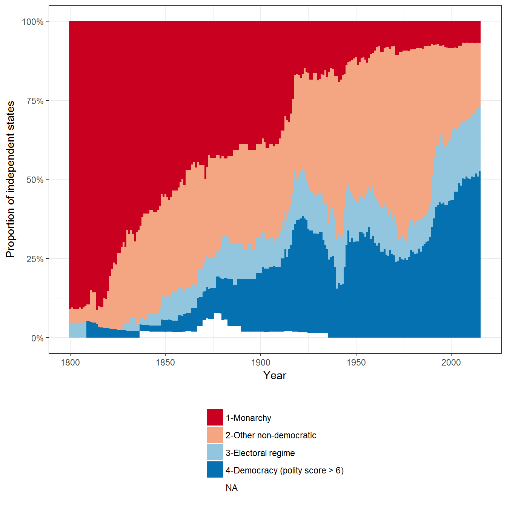
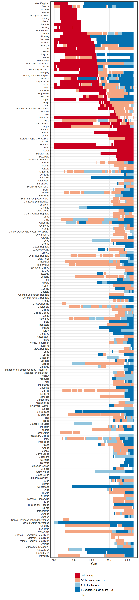
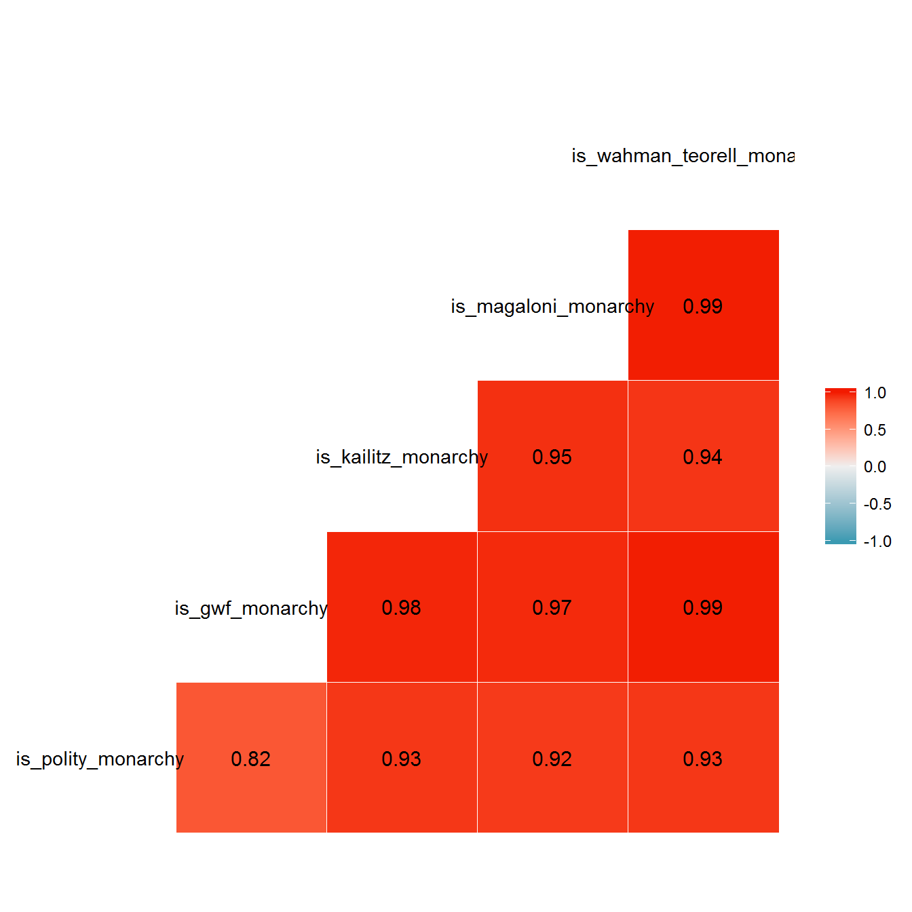
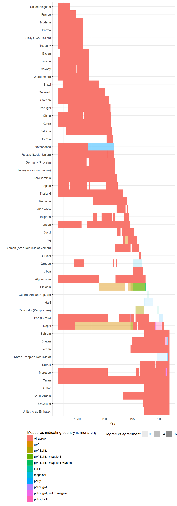

This vignette shows how to replicate and extend the charts in chapter 7 of my book Non-democratic Politics: Authoritarianism, Dictatorships, and Democratization (Palgrave Macmillan, 2016). It assumes that you have downloaded the replication package as follows:
if(!require(devtools)) {
install.packages("devtools")
}
devtools::install_github('xmarquez/AuthoritarianismBook')It also assumes you have the dplyr, ggplot2, scales, forcats, GGally, reshape2 and knitr packages installed:
if(!require(dplyr)) {
install.packages("dplyr")
}
if(!require(ggplot2)) {
install.packages("ggplot2")
}
if(!require(scales)) {
install.packages("forcats")
}
if(!require(forcats)) {
install.packages("scales")
}
if(!require(GGally)) {
install.packages("GGally")
}
if(!require(reshape2)) {
install.packages("reshape2")
}
if(!require(knitr)) {
install.packages("knitr")
}The figure identifies the proportion of monarchies around the world by identifying those countries whose executive is selected through `ascription’ (whether or not it is paired with other forms of selection) in Polity IV (Marshall, Gurr, and Jaggers 2010). The data excludes periods of foreign occupation or anarchy, and countries with fewer than 500,000 people.
library(AuthoritarianismBook)
library(dplyr)
library(ggplot2)
data <- polity_annual %>%
mutate(exrec2 = plyr::mapvalues(exrec,
from = sort(unique(exrec)),
to = c("Transition",
"Anarchy",
"Foreign occupation",
"1-Monarchy",
"1-Monarchy",
"2-Other non-democratic",
"2-Other non-democratic",
"2-Other non-democratic",
"1-Monarchy",
"3-Electoral regime",
"3-Electoral regime"))) %>%
filter(!exrec2 %in% c("Anarchy","Transition","Foreign occupation")) %>%
mutate(exrec2 = ifelse(polity2 > 6,
"4-Democracy (polity score > 6)",
as.character(exrec2)))
ggplot(data = data, aes(x = year, fill = exrec2))+
geom_bar(width = 1, position = "fill") +
theme_bw() +
theme(legend.position = "bottom") +
labs(fill = "",
x = "Year",
y = "Proportion of independent states") +
guides(fill = guide_legend(ncol=1, title.position = "top")) +
scale_fill_brewer(type = "div", palette = "RdBu") +
scale_y_continuous(labels = scales::percent)
We can disaggregate this data by country to see the main transitions:
data <- data %>%
group_by(country_name) %>%
mutate(last_monarchy = ifelse(any(exrec2 == "1-Monarchy"),
max(year[ exrec2 == "1-Monarchy"], na.rm = TRUE),
2016))
ggplot(data = data,
aes(x = forcats::fct_rev(reorder(country_name,
last_monarchy)),
y = year))+
geom_tile(aes(fill = exrec2)) +
theme_bw() +
theme(legend.position = "bottom") +
labs(fill = "",
x = "",
y = "Year") +
guides(fill = guide_legend(ncol=1, title.position = "top")) +
scale_fill_brewer(type = "div", palette = "RdBu") +
coord_flip()
Coders don’t always agree. Other measures of monarchy (in Geddes, Wright, and Frantz 2014; Kailitz 2013; Magaloni, Chu, and Min 2013; and Wahman, Teorell, and Hadenius 2013) are highly but not perfectly correlated with the measure of monarchy derived from the exrec variable of Polity IV:
data <- data %>%
ungroup() %>%
mutate(is_polity_monarchy = (exrec2 == "1-Monarchy")) %>%
full_join(all_gwf_extended_yearly %>%
select(country_name, year, gwf_full_regimetype) %>%
mutate(is_gwf_monarchy = (gwf_full_regimetype == "monarchy"))) %>%
full_join(kailitz_yearly %>%
select(country_name, year, combined_regime, monarchy) %>%
mutate(is_kailitz_monarchy = monarchy)) %>%
full_join(magaloni %>%
select(country_name, year, regime_nr) %>%
mutate(is_magaloni_monarchy = (regime_nr == "Monarchy"))) %>%
full_join(wahman_teorell %>%
select(country_name, year, regime1ny) %>%
filter(!is.na(regime1ny)) %>%
mutate(is_wahman_teorell_monarchy = (regime1ny == "Monarchy"))) ## Joining, by = c("country_name", "year")
## Joining, by = c("country_name", "year")
## Joining, by = c("country_name", "year")
## Joining, by = c("country_name", "year")library(GGally)
corr_data <- data %>%
ungroup() %>%
select(is_polity_monarchy,
is_gwf_monarchy,
is_kailitz_monarchy,
is_magaloni_monarchy,
is_wahman_teorell_monarchy) %>%
mutate_all(as.numeric)
ggcorr(data = corr_data, label = TRUE, label_round = 2)
We can visualize the differences like this:
library(reshape2)
data <- data %>%
filter(in_system) %>%
melt(measure.vars = c("is_polity_monarchy",
"is_gwf_monarchy",
"is_kailitz_monarchy",
"is_magaloni_monarchy",
"is_wahman_teorell_monarchy"),
na.rm = TRUE) %>%
mutate(variable = stringr::str_extract(variable,
"_[a-z]+_"),
variable = stringr::str_replace_all(variable, "_", "")) %>%
group_by(country_name, year) %>%
summarise(num_measures = n(),
sum_measures = sum(value),
prop_measures = sum_measures/num_measures,
which_measures = ifelse(prop_measures == 1,
"All agree",
paste(variable[ value ], collapse = ", ")),
measures_disagreeing = ifelse(prop_measures == 1,
"All agree",
paste(variable[ !value ], collapse = ", "))) %>%
group_by(country_name) %>%
mutate(last_monarchy = ifelse(any(prop_measures > 0),
max(year[ prop_measures > 0 ], na.rm = TRUE),
2016)) %>%
filter(prop_measures > 0)
ggplot(data = data,
aes(x = forcats::fct_rev(reorder(country_name,
last_monarchy)),
y = year)) +
geom_tile(aes(fill = which_measures,
alpha = prop_measures)) +
theme_bw() +
theme(legend.position = "bottom") +
labs(fill = "Measures indicating country is monarchy",
alpha = "Degree of agreement",
x = "",
y = "Year") +
guides(fill = guide_legend(title.position = "top", ncol = 1)) +
coord_flip()
data %>%
filter(prop_measures < 1,
num_measures > 1) %>%
group_by(country_name, prop_measures, num_measures, which_measures, measures_disagreeing) %>%
summarise(min(year), max(year)) %>%
knitr::kable()| country_name | prop_measures | num_measures | which_measures | measures_disagreeing | min(year) | max(year) |
|---|---|---|---|---|---|---|
| Bhutan | 0.5000000 | 2 | polity | magaloni | 2011 | 2012 |
| Bhutan | 0.5000000 | 4 | polity, kailitz | magaloni, wahman | 2008 | 2010 |
| Cambodia (Kampuchea) | 0.2000000 | 5 | kailitz | polity, gwf, magaloni, wahman | 1993 | 1996 |
| Cambodia (Kampuchea) | 0.5000000 | 4 | gwf, kailitz | polity, magaloni | 1955 | 1969 |
| Central African Republic | 0.2000000 | 5 | kailitz | polity, gwf, magaloni, wahman | 1976 | 1978 |
| Ethiopia | 0.5000000 | 2 | gwf | polity | 1889 | 1945 |
| Ethiopia | 0.6666667 | 3 | gwf, kailitz | polity | 1946 | 1949 |
| Ethiopia | 0.7500000 | 4 | gwf, kailitz, magaloni | polity | 1950 | 1971 |
| Ethiopia | 0.8000000 | 5 | gwf, kailitz, magaloni, wahman | polity | 1972 | 1973 |
| Greece | 0.2500000 | 4 | magaloni | polity, gwf, kailitz | 1950 | 1966 |
| Haiti | 0.2000000 | 5 | polity | gwf, kailitz, magaloni, wahman | 1972 | 1985 |
| Haiti | 0.2500000 | 4 | polity | gwf, kailitz, magaloni | 1971 | 1971 |
| Iran (Persia) | 0.2500000 | 4 | polity | gwf, magaloni, wahman | 1997 | 2003 |
| Iran (Persia) | 0.6666667 | 3 | polity, gwf | kailitz | 1946 | 1946 |
| Iraq | 0.5000000 | 2 | gwf | polity | 1936 | 1940 |
| Korea, People’s Republic of | 0.2000000 | 5 | polity | gwf, kailitz, magaloni, wahman | 1994 | 2010 |
| Korea, People’s Republic of | 0.5000000 | 2 | polity | magaloni | 2011 | 2012 |
| Morocco | 0.8000000 | 5 | polity, gwf, kailitz, magaloni | wahman | 2009 | 2010 |
| Nepal | 0.4000000 | 5 | polity, kailitz | gwf, magaloni, wahman | 1991 | 2001 |
| Nepal | 0.5000000 | 2 | gwf | polity | 1846 | 1945 |
| Nepal | 0.6666667 | 3 | gwf, kailitz | polity | 1946 | 1949 |
| Nepal | 0.7500000 | 4 | gwf, kailitz, magaloni | polity | 1950 | 1959 |
| Nepal | 0.8000000 | 5 | polity, gwf, kailitz, magaloni | wahman | 1990 | 1990 |
| Netherlands | 0.5000000 | 2 | polity | gwf | 1870 | 1916 |
Geddes, Barbara, Joseph Wright, and Erica Frantz. 2014. “Autocratic Breakdown and Regime Transitions: A New Data Set.” Perspectives on Politics 12 (1): 313–31. doi:10.1017/S1537592714000851.
Kailitz, Steffen. 2013. “Classifying Political Regimes Revisited: Legitimation and Durability.” Democratization 20 (1): 39–60. doi:10.1080/13510347.2013.738861.
Magaloni, Beatriz, Jonathan Chu, and Eric Min. 2013. “Autocracies of the World, 1950-2012 (Version 1.0).” Dataset. http://cddrl.fsi.stanford.edu/research/autocracies_of_the_world_dataset.
Marshall, Monty G., Ted Robert Gurr, and Keith Jaggers. 2010. “Polity IV Project: Political Regime Characteristics and Transitions, 1800-2009.” Data set. Center for Systemic Peace. http://www.systemicpeace.org/inscr/inscr.htm.
Wahman, Michael, Jan Teorell, and Axel Hadenius. 2013. “Authoritarian Regime Types Revisited: Updated Data in Comparative Perspective.” Contemporary Politics 19 (1): 19–34. https://sites.google.com/site/authoritarianregimedataset/data.